遊覽完南海銀尚州銀沙海灘, 按原定計劃, 接著是繼續步行往松亭松風海水浴場 (송정솔바람해수욕장), 然後乘巴士往德國村(남해독일마을)的, 只可惜因今早大雨, 延遲了三個半鐘頭才出發, 看看手錶, 現在已經是下午五時五分, 離太陽下山只有約一小時, 不可能按原定計劃進行, 唯有在這裡結束今天的行程, 而南海郡所有行程到此也全部完滿完結了!
接著是步行往銀尚州銀沙海灘旁的巴士站, 乘巴士返回南海公用客運站。
離開銀尚州銀沙海灘, 經過一幅很長、很漂亮的壁畫, 尤其時牆角的紅郵筒, 十分奪目逼真, 驟眼看還以為是真的。
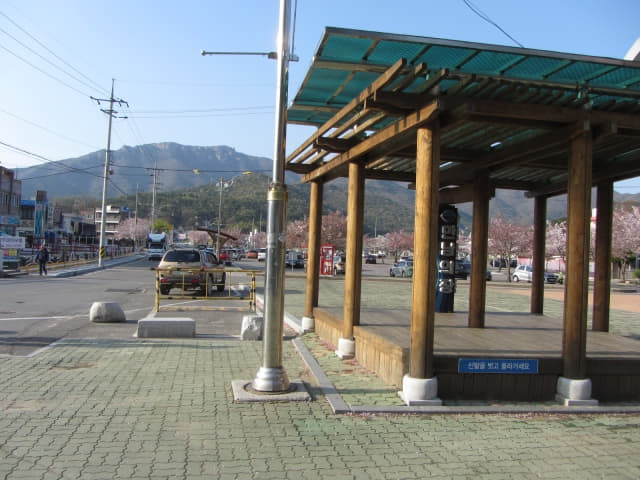
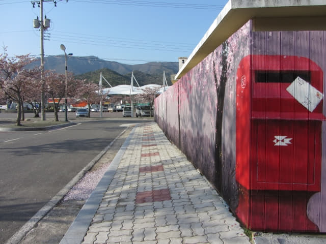
生展在身體前面的翅膀。
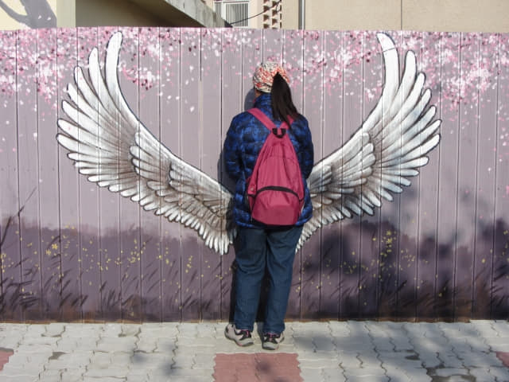
銀尚州銀沙海灘 「상주해수욕장」巴士站 乘巴士返南海公用客運站
穿過壁畫和停車場, 看見馬路對面有一個巴士站, 便立即走去。巴士站名是「상주해수욕장」。
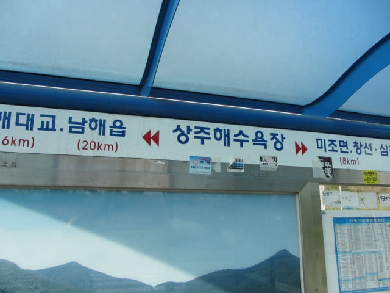
巴士站內有一個時刻表, 但完全看不懂! 沒辦法, 只有在等。
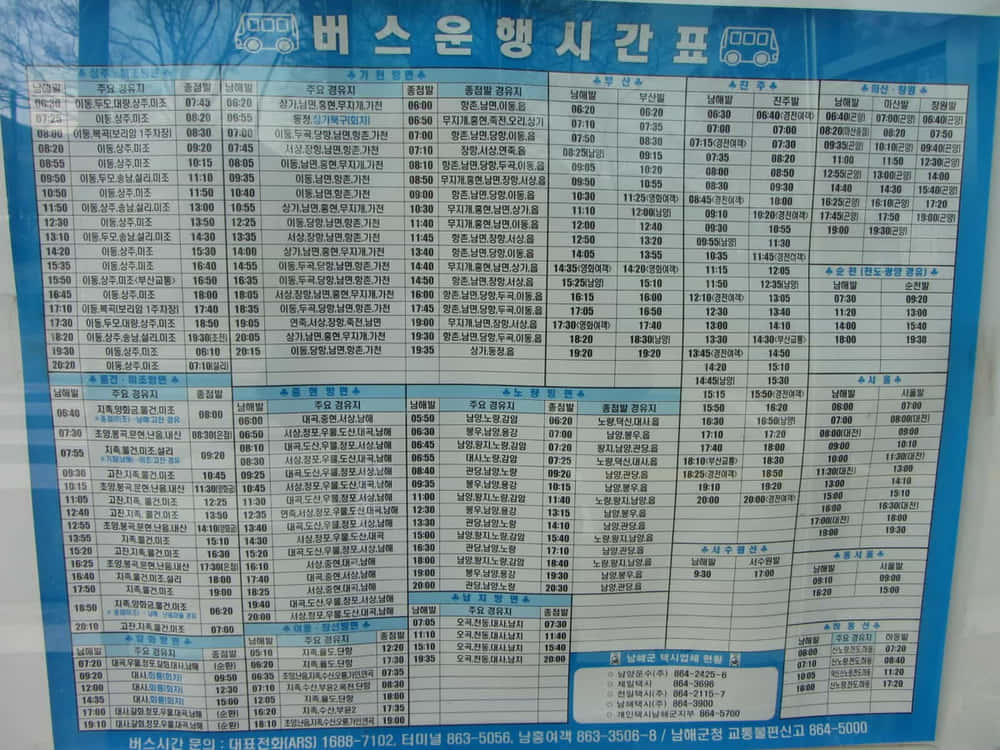
久久沒有巴士
等了一會, 有一位當地的中年女士走來巴士站坐下來, 心暗暗歡喜, 應該快會有巴士來吧! 也順便問她什麼時候會有巴士來, 怎料和加川梯田村乘巴士往二東面的情況完全一樣, 她同樣不斷「耍手擰頭」, 好像表示沒有巴士的!
不肯定她的意思, 唯有繼續等吧!
又等了十多分鐘, 那位中年女士站起來! 莫非有巴士來! 她又對我們「耍手擰頭」, 好像表示沒有巴士的! 接著便走到馬路對面, 過了一會, 一輛巴士從右邊駛來, 在對面馬路停下來, 原來她是乘巴士往另一方向的!
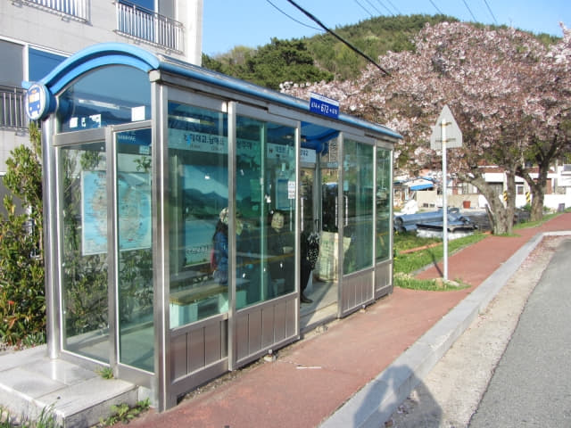
沒辦法, 唯有繼續等吧! 又等了五分鐘, 回想起加川梯田村乘巴士往二東面的故事, 剛才那位中年女士應該是表示: 「現在沒有巴士的, 要很遲才有!」
估計很久才有巴士 再往銀尚州銀沙海灘逛逛
想起在加川梯田村已經傻了一次, 浪費了差不多一小時, 不如再走去銀尚州銀沙海灘逛逛, 總好在這裡呆等! 便決定半小時後才回來巴士站。
接著便離開「상주해수욕장」巴士站, 走往銀尚州銀沙海灘。
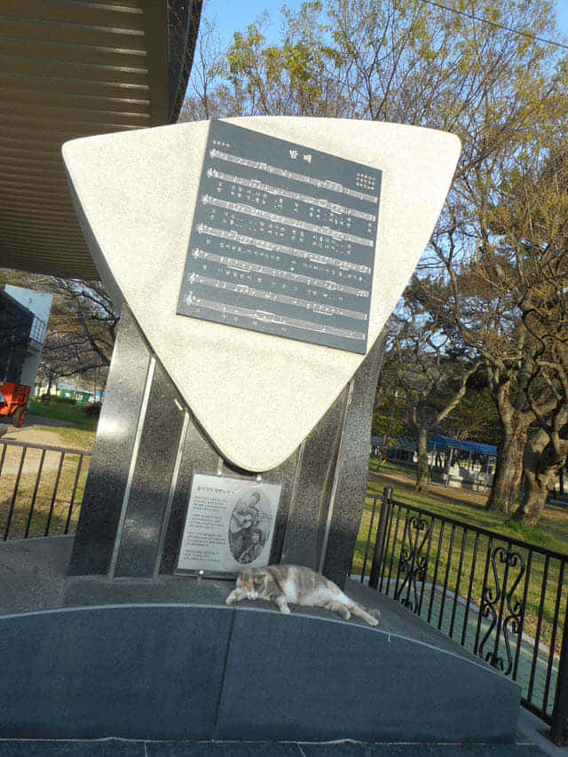
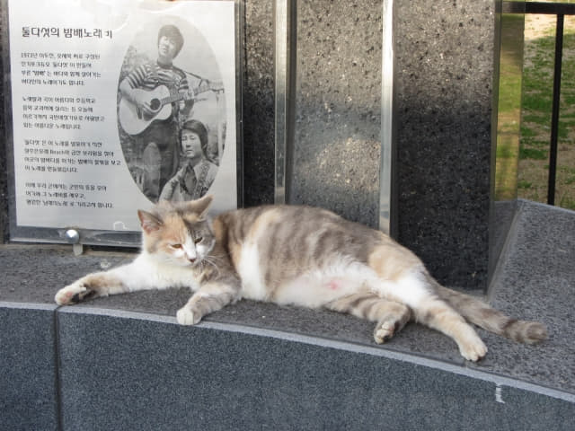
再遊銀尚州銀沙海灘
很快便返回銀尚州銀沙海灘, 景色更悠和、更迷人!
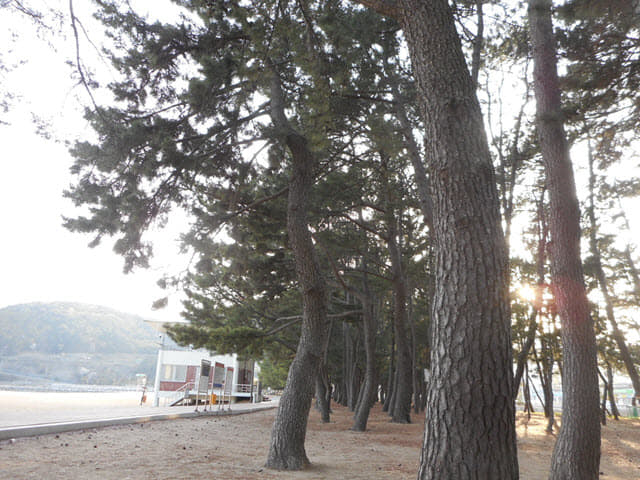
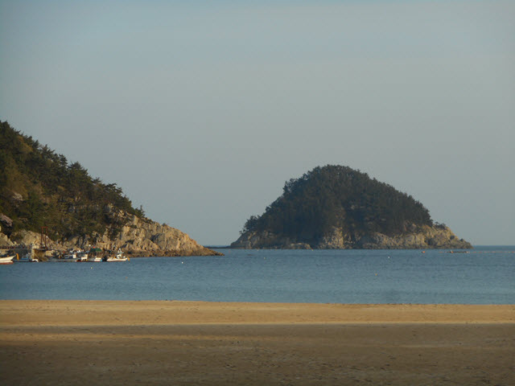
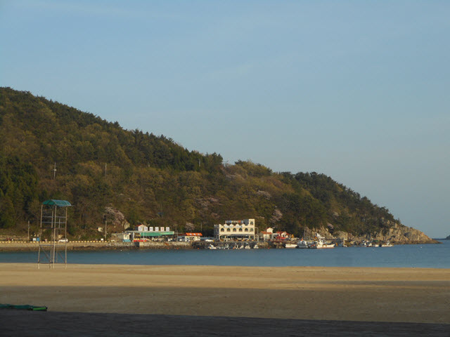
哈哈~~ 剛才那幾位年輕人終於離開戀人聖地了!
「咔嚓」
不用半分鐘便「攪掂」啦!
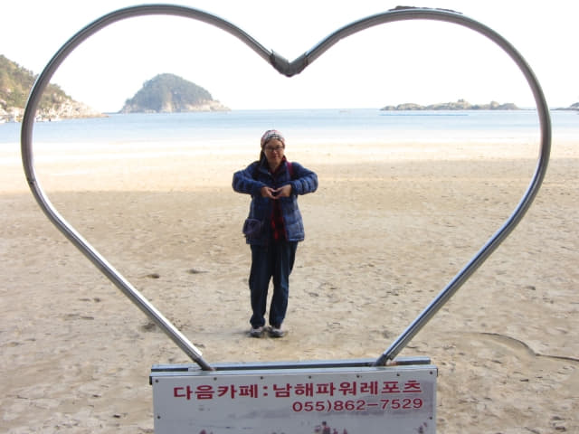
其實剛才已經看見沙灘最左邊的山坡上有一些油菜花, 只是當時不想走去, 既然現在有時間, 不如走去看看。
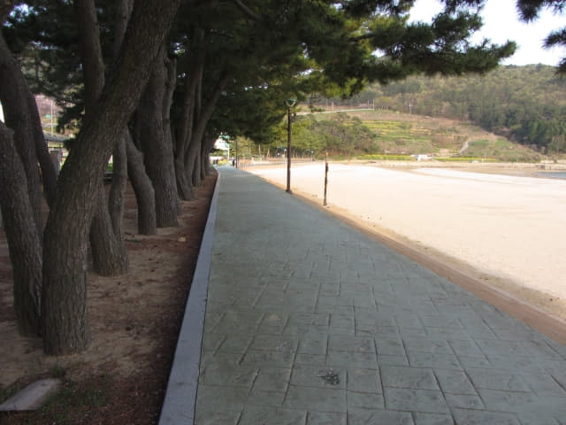
其實山坡上的梯田會不會就是斗牟村 (두모마을)? 出發前也曾經計劃往斗牟村, 只是不清楚實際的位置, 所以最後都取消。
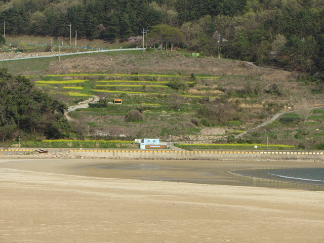
沿沙灘旁的步道匆匆走往山坡下的油菜花。
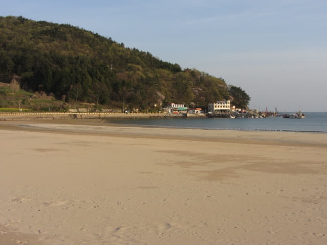
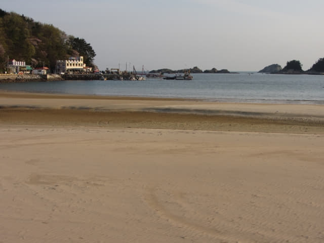
很快便來到油菜花田, 風景真是很美!
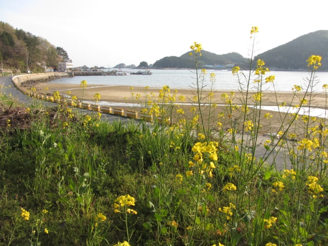
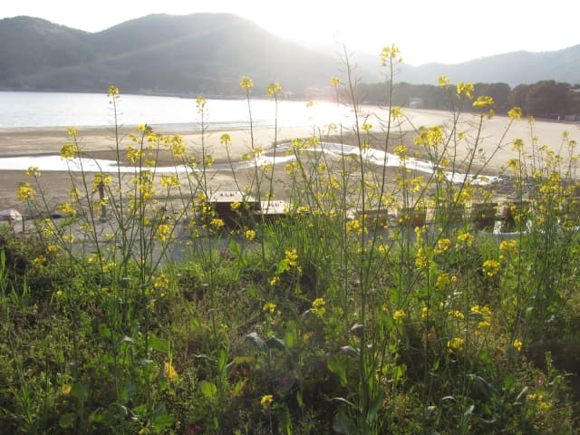
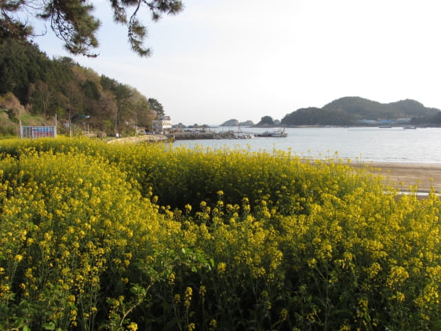
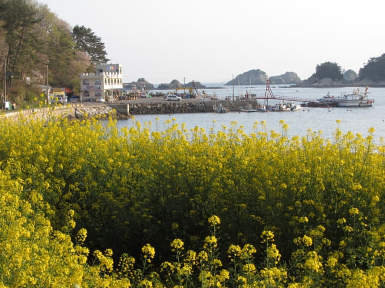
在油菜花田只流連了一會, 恐怕巴士隨時駛來, 便匆匆跑回剛才的「상주해수욕장」巴士站。
「상주해수욕장」巴士站對面有一個面積很小的公園, 放置了很多有趣的藝術品, 也順道在外圍看看。
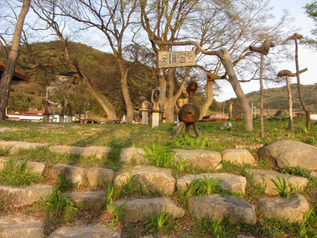
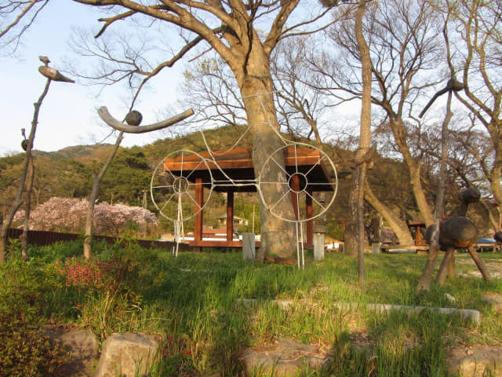
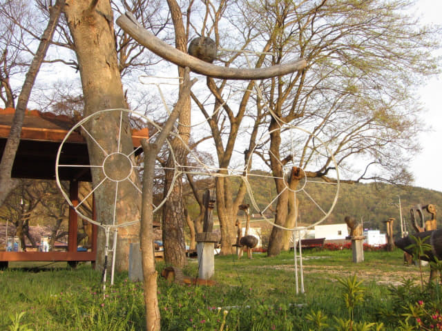
公園的環境不錯的。
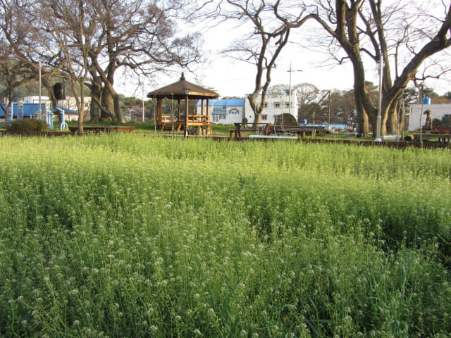
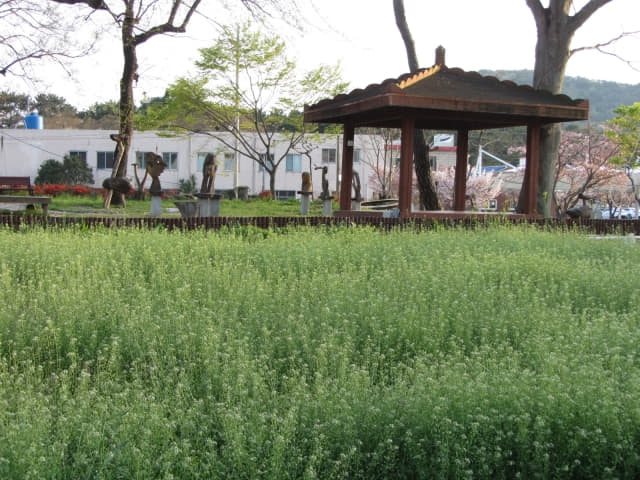